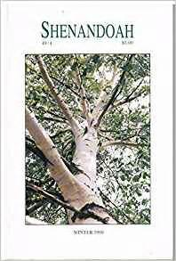
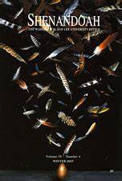
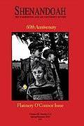
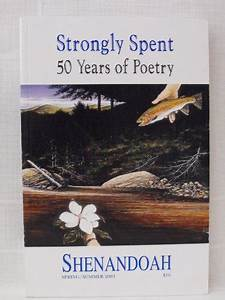

Now What?
In my end is my beginning. I’m hoping there’s some truth to Eliot’s assertion, for this is my last issue (after sixty-some, most in print, the last fourteen on line) as editor of Shenandoah, my last editor’s note. My final semester teaching at WLU is already behind me, office walls bare, my shelves of books, bones, scary clowns, face jugs and poetry broadsides beginning to fill Grey Goose and Bushmills boxes, and my thoughts for some weeks have been circling back to this question: what key should an editor’s swan song be in? I know a little from my yellow pad of notes, and expect I’ll discover more as I keep tapping these keys. A power pole near my house sports a black and orange sign that reads: “CAUTION UNDERGROUND SOURCE,” which has guided me for years. I’ve trusted my instincts but stayed wary, especially as my powers of reason diminished with fatigue. So I’m going to trust the current of the subterranean river again. This much I have decided: readers are probably more interested in what is “to come,” echoing Yeats, than what is “past or passing.” I’ll begin with the news, then drift back to a sketchy history of Shenandoah in my twenty-three years here, who I have to thank for any achievements and progress, what stumbling blocks and sidhe I encountered and dodged, scrapped against or stumbled over.
I am pleased to announce our annual prizes for the most distinguished works of poetry, fiction and non-fiction to appear in volume 67 of Shenandoah. And the winners are: in poetry Lisa Beech Hartz’s “Portrait of Sherwood Anderson, Ripshin Farm, Doris Ullman, 1928,” in fiction April Darcy’s hard look at the perils of freedom “Free Fall” and in non-fiction Daniel Paul’s adroit and witty “Significant Otters.” The honoraria for these awards are $1000, and I send out my congratulations to the recipients, the honorable mentions (Lisa Russ Spaar’s “Bluebird Madrigal” and Austin Segrest’s “Searoom” in poetry, Lynn Sloan’s “Nature Rules” in fiction and Amy Reading’s whale meditation “The Rare Virtue of Spaciousness: Bigger on the Inside” in non-fiction) and to the other writers who made the re-reading of the fall 2017 contents and this spring’s issues so pleasing and the judging so difficult. I also want to apologize to Virginia poets (and generous sponsors Jim and Priscilla Graybeal) for not conducting the Graybeal-Gowen contest this year. The reasons are numerous, but at the core are exit preparations (such as the Shenandoah historical exhibit curated by Emily Cook in Leyburn Library) and the pressures and hours involving the search for a new editor. I hope that my successor, Beth Staples, will revive the contest and continue the search for Virginia poems with which we honor a lover of poetry, Howerton Gowen, WLU ‘30.
In the news release that begins on our homepage and on our Facebook page you’ve likely seen the announcement of Beth’s appointment and the summary of her professional history. The English Department conducted a national search, and after the winnowing and reading, weighing and discussing, skyping and interviewing, Beth was selected from a pool of about a hundred applicants, and I believe the department found a surefire winner. Beth’s teaching and editing experience are extensive, and her devotion to the art of exploring, interrogating and fine tuning wonderful and promising manuscripts has brought her a national reputation. In the fall she will, as a full-fledged professorial member of the English Department with a voice and a vote, assume responsibilities for publishing the journal, conducting the internships and teaching writing classes. It’s a heavy load, and I wish her cooperation, support and luck in shouldering it and forecast that her skill and energy will make luck almost unnecessary. I expect she’ll make Shenandoah an altogether new and exciting digital journal, a transformation it is poised and due for. And I further hope that her editorial work in Early Fielding Hall will fuel her creative projects.
Flashback
When I arrived in Lexington in July of 1995, Shenandoah was (besides being a popular and curious traditional song) a thriving and widely acclaimed print magazine, for years one of my favorites. My previous experience had been with inked and perfect-bound magazines – Cold Mountain Review, Southern Humanities Review, Caesura and a few truly ephemeral ones. I could see that Shenandoah was not “broke” and did not need “fixin.” Still, I wanted to adjust the dials a little more toward my preferred frequencies, widen the appeal, broaden the contents, redesign and add more healing laughter to moderate my own dark narrative appetites. For example, I wanted to extend the non-fiction to include artful examples of what’s now called “creative non-fiction,” as well as some of the newly christened “flash fiction” that was receiving widespread attention. And I confess that I thought less might be more in the arena of scholarly essays. I also wanted to make additional room for the transgressive, the alarming, the zany, as well as work suffused with both mysteries and Mystery. To that end I contrived the mission statement that has served for over two decades – formal accomplishment, passionate understanding and serious mischief. This direction did not preclude pursuing long-term Shenandoah contributors, and I suspect my taste overlapped with that of my recent predecessors by about 50%.
Before I march any further into this, I want to thank those who guided, assisted, restrained and encouraged me, while carrying part of the work load. My wife Sarah Kennedy – a busy and successful writer, teacher and editor herself – gave me emotional rubdowns, wise advice and heart’s ease. She also wrote exemplary reviews, conducted interviews and counseled shrewdly and calmly concerning my daily responses to the slings and arrows, especially the administrative and political ones. She has kept me out of strait jackets and orange jumpsuits. Her two poems (originally published in Southern Review) in this issue are her first in Shenandoah, and I am proud to have her less journalistic work on display for a change, even if their inclusion approaches some people’s nepotism threshold. Honi soit qui mal y pense.
Several of those who served officially as contributing editors or just close confidants over the years have crossed over the river, and they are greatly missed: Jake Adam York, Diann Blakely, Reetika Vazirani, John Montague, Kathryn Stripling Byer, George Scarbrough and Claudia Emerson among them. Yet another lives on in self-imposed exile in Italy: the indispensable Preacher Jim Groom, who is the Shenandoah website’s designer, maintenance magician, trainer, cheerleader and digital compass. Long may he prosper.
I’ve had several contributing editors and “civilian” friends who have been steady and eloquent guides and advisors: Brendan Galvin, Philip Belcher, Lisa Russ Spaar, Simmons Buntin (the editor of Terrain, which everyone should follow), Davis Enloe, Charles Frazier, Will Wright, Don Secreast, William “finish strong” Dunlap, Kirk Follo and the late exemplary office dog Cormac, RIP. As I am probably omitting someone important, I apologize and plead encroaching geezer syndrome. (If I seem to be making light of that possibility, it’s a desperate measure.)
Washington and Lee students serving in the work study program or as interns have sharpened my eyes and provided a sounding board, an amen choir, intelligent resistance, computer guidance and ideas (con brio) that lay beyond my perimeter. Much of what Shenandoah has become is due to their collective genius and energies. Among the couple of dozen work study students, I must not fail to express my gratitude for the work of the invaluable Rebecca Makkai and Juliana Kerper, the most resourceful and affable of all. Among interns (over a hundred by now) I could not have survived without Jane Beal, Matt Null, Sophie Xiong, Tracy Richardson, Annie Persons, Nick Smith, Tyler Van Riper, Isabella Martin, Cassie McGinty, Arthur Fang, Elise Petraca, Eleanor Kennedy, Ryan Scott, Elise Moody, Emma Nash, Han Qi, Sarah Guy, Allison Chopin, Arturo Rua, Lorna Golder, Michael Renard, Patrick Hastings and others too numerous to list. It does my heart good just to remember their faces and voices. Although T. R. Hummer once wrote that there is no editor’s muse, SOMEBODY has sent me these splendid sorcerer’s apprentices. Deep thanks are due to the English Department’s steadfast Sandy O’Connell and the magazine’s former business manager/ managing editor Lynn Leech, who served with energy and insight until financial decisions she neither made nor deserved led the university to eliminate her position.
Not all Washington and Lee administrators and faculty members have shown an interest in Shenandoah or support for it. In fact, a few have been openly hostile to its existence. It’s not my place to say “their loss,” but maybe I just did. Perhaps even these folks are due a little thanks, as Milton was not mistaken when he wrote, “That which purifies us is trial, and trial is by what is contrary.” Faculty members who have, in contrast, helped pull an oar (usually by writing reviews, teaching work from our pages or offering steadying advice) as I tried to take us upstream include Marc Connor, Lesley Wheeler, Gordon Ball, Alex Brown, Chris Gavaler, Leah Green, John Leland, Laura Brodie and several of the adjuncts who have come and gone with the winds of fortune. Administrators who have shown life-affirming concern, interest, encouragement and compassion include John Elrod, Jeanine Stewart, Suzanne Keen, Lad Sessions, Larry Boetsch, Harlan Beckley, Hank Dobin and the thoughtful and resourceful Wendy Price. I take my hat off to all of them, though the way things are going these days, I’ll probably forget where I left it. All I can say to our adversaries and detractors is that, despite the monstrous white whale’s mighty attack on the Pequod, Ishmael survived to fish another day.
Further thanks are due to production and publicity angels Denise Watts, Cindy Moore, Julie Cline and Jim Gooden, and I salute Rob and Christina McDonald, my oft-times hosts at VMI these past two decades.
An Historical Note
Long before I arrived in Lexington Shenandoah was, at least in literary circles and scrums, famous for publishing symposia on acclaimed writers and original writing by many of those writers themselves, including Cummings, Auden, Merrill, Reynolds Price, Eudora Welty, Wallace Stevens, Flannery O’Connor, Marianne Moore, Tolkien, and I strove to continue that latter tendency with: W. S. Merwin, Richard Wilbur, Rodney Jones, Rita Dove, Billy Collins, Lyrae Van Clief-Stefanon, Cathy Song, Yusef Komunyakaa, Henry Taylor, Peter Taylor, Tess Taylor, Bob Wrigley, Li-Young Lee, Cathy Day, Kwame Dawes, Steve Scafidi, Steve Kronen, Betsy Scholl, Linda Pastan, George Singleton, James Lee Burke, Natasha Trethewey, Ted Kooser, Timothy Liu, Alice Friman, Rick Bass, Carolyn Kizer, Joyce Carol Oates, the fierce and affable Brendan Galvin, Marilyn Hacker, Charles Wright, Rebecca Makkai and David Wojahn. Just that sample dizzies me. Again, there are far more than I have time or space to mention, though a Homeric catalogue would be appropriate.
I have kept an eye out for writing talent of all sorts and long endeavored to keep in mind this suggestion from The Book of Isaiah: “Butter and honey shall he eat, that he may refuse the evil and choose the good,” and in pursuit of my honey and butter I recruited from some special precincts to accomplish this. I’ve leaned heavily on Irish poets John Montague, Medbh McGuckian, Eavan Boland, Mary O’Malley, Paula Meehan, Eammon Grennan, Michael Longley and their Yank cousins such as Gib Ruark and Brendan. Shenandoah also ran features of Native American poetry, Appalachian poetry, experimental poetry, a traditional music issue, Southern poetry (a huge issue called Buck and Wing), a Mary Flannery O’Connor-related issue, a Shakespeare feature, a noir issue, a collection of poems about the American Civil War, a retrospective of half a century of poems in Shenandoah (another thick volume called Strongly Spent), even a Tom Wolfe issue. As with less specialized issues, we relied more on public and general invitations than personal solicitations, and that, plus our appetite for as-yet-unknown writers has remained a point of pride. (In fact, this year’s fiction prize winner is the very first published story by April Darcy.)
The rewards of reading and presenting these writers, plus visual artists like Walter Anderson, Billy Renkl, Suzanne Stryk, Julie Speed, Barry Moser, Agnes Carbrey, Larry Stene and Sally Mann on the covers of finely made, perfect bound journals-as-books were enough to keep me fighting through throat cancer, two hip replacements, a ruptured appendix and the endless task of relocation – setting up and maintaining four different suites of offices in my time at Shenandoah. But others took notice of our work as well, and we received Pushcart Prizes, had work reprinted in New Stories from the South, the O’Henry Awards annual anthologies, the Best American series and various other anthologies. In 2000 we were invited to celebrate the magazine’s fiftieth anniversary by presenting public readings at the National Arts Club in NYC and at the annual Associated Writing Programs meeting and the Virginia Festival of the Book, In 2008 Shenandoah (along with Ralph Stanley, the American Shakespeare Center and others) was selected by Tim Kaine’s perceptive committee to receive the Virginia Governor’s Award for Achievement in the Arts. No other publication or press has ever received that honor.
Meanwhile, the submissions rolled in, our subscription tally crept up, intern candidates abounded, and I even oversaw editing projects for credit with students from Hollins, Lynchburg College and Mary Baldwin. We endured a move from the fine and spacious offices in the well-named Troubadour Theater to the basement of Mattingly House, and the downsizing was painful, involving the first of several recycling Olympics where innumerable back issues of Shenandoah and fifty other literary journals we exchanged with, plus review copies of poetry books and novels – a whole mini-library of contemporary writing – had to be sacrificed to the restrictions of space. Two more moves would result in further streamlining, but still, the magazine grew ever more attractive and Washington and Lee continued to participate in the conversation of American literature and letters, as it should, guided by Scott Russell Sanders’ essay “Amos and James” in Shenandoah Volume 45, Number 3: “The work of language deserves our greatest care, for the tongue’s fire may devour the world, or may light the way.” I even had opportunities to try to light the way a little. Though my status as a staff member disqualified me for sabbaticals and various internal grants, Washington and Lee allowed me the flexibility to travel for both research and teaching opportunities. Though the challenges of running Shenandoah were reminiscent of the task assigned Sisyphus, some of the rewards, especially in the early years, helped me to write.
The Dark Hours
So why the intimations of trouble in paradise? I’ve omitted to mention a couple of the challenges which altered the atmosphere in the office and threatened our funding (and survival). For a detailed understanding of the first of two rounds of crisis, see my editor’s note “The Tradition of Shenandoah: Promoting Literature at Washington and Lee and Beyond” in Volume 53, Number 4; Winter, 2003. Those “complications” have been turned aside for the moment, but at the time, they posed an existential threat, and some of the doubters retain their voice and influence.
With the passing of President John Elrod, the Washington and Lee ship had seemed to me less steady, and we all remember the national financial crisis of the early part of the century, plus the kinds of reassessment that followed 9-11. It was a time of change and uncertainty, and Shenandoah’s troubles coincided with national uncertainties and the arrival of a new WLU president who said in a get-acquainted print interview that, due to memos, abstracts and other professional correspondence, he just didn’t have time to read books. I was still reeling from the fog of chemotherapy and hoped I had misread. However, on settling in, this administrator immediately questioned the value of Shenandoah as a money-making enterprise and delegated his Dean of the College (later provost) to have me gather evidence (“proof of life”?) of our value to the WLU central mission, evidence which took the form of a dossier of letters, testimonials, certificates and so on attesting to the appropriateness of a literary publication which at that point had been highly regarded nationally for over half a century. Our offices began to resemble a C.S.I. set, and the crate (no joke) of evidence we compiled included reviews from professional journals, The Washington Post, Entertainment Weekly, celebrities like Garrison Keillor, and stacks of letters from other journal editors (Kenyon Review, Southern Review, Poetry, Sewanee Review and others) and writers (Mary Oliver comes to mind, Seamus Heaney, Charles Wright, W. S. Merwin, Rita Dove, Richard Wilbur, Reynolds Price), though those files, which in the end were never actually requested by our monitors, are long dispersed, some lost in the office moves, but others currently located in the University Archives, though not yet catalogued, and in my own private journals (the keeping of which was my primary catharsis). The indignant defenses make for interesting reading; writers can be precise, witty and scathing. While compiling these documents, I was also instructed to teach on a more regular basis, one of two out-of-the-blue increases in classroom work load which were extramural for someone who, like me, was was hired as a staff member and not a faculty member. And no choice on my part, and no salary supplement. I felt beleaguered and bewildered. Who in the academic world could fail to feel the excitement of the magazine’s content and see the intrinsic value of Shenandoah (or Kenyon Review, Gettysburg Review, Ploughshares, for that matter)? How deeply did this question infuse my brain? I still pose it every day.

That first round was a devastating experience, and I was somewhat muzzled against delivering a candid response. Not being tenured, I have served “at the pleasure of the Dean,” and I would have been easier to fire than James Comey. Meanwhile, our offices were downsized (though later on, for four memorable years, housed in a lovely antebellum building with a magnolia tree behind the old county courthouse) . . . and our funding was leveled. The soliciting and gathering of supportive data was so time-consuming, I barely had the energy to run the magazine, much less continue my own scribbling, which was in my original job description. My managing editor and I labored under duress, and the magazine was on the verge of elimination.
Looking back, I believe Shenandoah was saved by the confluence of two events. First, The Chronicle of Higher Education got wind of the rumor that WLU was considering blowing out the candle at Shenandoah, and they ran a quietly outraged article quoting the provost as he compared the university’s sponsoring a literary journal to “running a hardware store.” (The rumor the Chronicle heard could not have been hard to sniff out, as one of the president’s assistants was calling other literary magazine offices and fishing for criticism of Shenandoah’s contents or practices. I know this because, of course, several editors promptly informed me.) The second event was slowly gathering friction between the administrative executives and the teaching faculty. I had no hand in that other than polite applause. Our letters of support signed by the likes of Toni Morison, Robert Pinsky and Charles Frazier probably didn’t hurt, and for reasons I can only guess, the president had a change of heart and decided to devote the rest of his career to faith-based education. Elsewhere.
Harlan Beckley, serving as interim president, sat by the cosmetic fireplace (and active swallow passageway) in our Mattingly House basement office and voiced his whole-hearted support for the magazine. Then in 2008, with a new fully-invested president in place, Shenandoah received a Virginia Governor’s Award for Achievement in the Arts (and, coincidentally, I received my second Library of Virginia Book of the Year Award for Poetry), I thought we were safe, and Lynn Leech and I, along with a newly-created class of student interns) were investing our energies in a grand 60th anniversary issue celebrating the work of Flannery O’Connor, a Shenandoah contributor almost fifty years before. An air of festivity sweetened the atmosphere in the office, and I increased the number of interns and started planning a Southern fiction issue. Then the ceiling fell, or half the ceiling.
What to Make of a Diminished Thing
The next round of complications came like a drone strike. No request for evidence, no conversation, no warning, no defense. Deliberations occurred in camera, and a message came to me via a fairly new Dean of the College: “A decision concerning the magazine has been made; over the next two years your budget will be cut in half. And the provost recommends you teach more.” Two reasons suggest themselves: some administrators still believed that Shenandoah did not contribute to the university’s mission, and some others believed that it was simply too expensive. I don’t pretend to understand the university’s financial condition and priorities, so I can’t dispute that one. Shortly after that renovation of Mattingly House began, after everyone else moved out, I packed up Shenandoah’s two hundred boxes of materials and listened to hammers and power saws overhead, as the Dean and his assistant sought new headquarters. They were resourceful, encouraging and successful. By mid-summer, the operation, lock stock and barrel, was relocated near that lovely magnolia and over a quarter a mile from Washington Hall. Location, location, vocation. We dug in and soldiered on. By we I mean the students and I; Lynn’s position was eliminated. The details are, I guess, better left unspecified.
This diminution was the most disappointing event in my professional life, so I’ll give it short shrift here. My eyes don’t well up over it, but my hackles still rise, and I think of Frost’s narrator in “The Oven Bird” wondering “What to make of a diminished thing.” When I look back now, I remember how shaken was my faith in the work I had done. Maybe I wasn’t performing my job as well as I thought. Maybe it was hubris, the whole thing really small potatoes. But the budget cut made it clear: Our publication had to go on line, a venue for which I have some respect and interest, but a technology that was a complete mystery to me and which did not (does not) fully sustain my aesthetic appetites. After losing my managing editor, I had to impersonate a bookkeeper, proofreader, paymaster and so on. Never got the hang of it, but we have managed to endure (to borrow from Faulkner). Interns have made a big difference, especially after mid-semester when they have really begun to learn their jobs. And there’s some consolation in the literary community as well. Blackbird, Terrain and The Cortland Review, three journals I very much admire, were born on line and thrive there. A new exhibit: Cold Mountain Review, which I founded as a print journal over forty years ago, has recently gone digital and appears to have found new vitality and integrity in the change. The Dean of the College at the time of the migration to the tangled web, the one who encouraged me and helped find funds for the construction of the WordPress site we still use, was wrong, and I with him, in our forlorn hope that we might be the first of many major journals to migrate toward the net. Instead, Kenyon Review, Georgia Review, Prairie Schooner, Missouri Review and others have created exciting web sites in addition to their thriving print magazines. So much for prophecy and springing eternal (that “thing with feathers”).
Costs and Benefits
When people ask me about the migration to virtual publishing, a path blazed by TriQuarterly with mixed results, they want to know why it happened and what I think, how it’s worked out. The answer to the first question might be “administrative priorities and far-reaching plans for the future culture of WLU.” It might have been a matter of money. No one in authority ever openly questioned my performance as editor, but people who don’t read books don’t usually engage in literary criticism. Lacking actual information, I can only surmise and fantasize, but it’s time to stop that and get on down the road.
Second question: how do I feel about the results? I don’t expect I’ll ever tire of the self-contained and inexpensive language-conveying technology called “the book.” I don’t mind reading on a screen journalism and menus, encyclopedia entries and quick-fix answers to questions like how to tie a royal coachman for fly fishing when the willow flies are hatching or how well Varina Davis knew Mary Chesnut. I enjoy access to features like Poetry Daily’s daily poem and the engaging blogs of a few people who value immediacy, free access and almost incomprehensible distribution but who are also devoted to delivering language in a deliberate and thrifty fashion. But when I want immersion, rumination and a reading experience that is as visceral, emotional, intellectual and familiar as it is convenient, I’ll still reach for a book. It’s what I know and much of what I am.
I enjoy the similar features on Shenandoah – the blog, instant quotes, Poem of the Week, flash fiction, brief reviews – but I’m less sanguine about reading long stories and essays on line. Sometimes I print them out, but that’s a step towards the book. Although I believe that we have held the quality of poetry and prose to a high standard since we went digital seven years ago, the good stories we publish have been harder to find. Luckily, we’ve fared better with the poetry. And who can blame the storytellers who resist publishing on the web? Prestige continues, for now, to cling to the print media.
Both editors of prize anthologies and older readers, for whom cost is less an issue, seem less drawn to virtual publication. Tenure committees are still skeptical, the mosh pit of thousands of literary publications is bewildering, as many of the fanciest are managed by some of the least literate or most trendy. The web is still, for some, the new guy in the barracks, and the experiment is yet young.
This seems as good a place as any to say that when the teaching was going well, even the teaching of how to use a Submittable platform or construct a WordPress post, it has been sustaining, my job rewarding. The students are still mentors for one who would “gladly learn and gladly teach.” I’ve profited in that department. If the overseers had not required me to teach more, I would have no doubt requested it myself. Still, volunteering leaves a much better taste than conscription.
But even a gaffer like me can feel the wind of change around my collar. Hierarchies are falling, institutions shifting, pace accelerating, multitasking increasing and the very considerations of what it means to mean something under assault. Although Dean Dobin and I were, in the short run, mistaken about the speed with which other major journals would follow TriQuarterly, we may have accidentally been right over the long haul. What the literary world is hedging its bets on, the rest of the world is betting the farm on – the invincibility and ubiquity of the Internet. But just in case somebody has miscalculated, tomorrow afternoon I’m seeing a carpenter about some new bookcases, gathering my beloveds about me and even a little mindful of Ray Bradbury’s Fahrenheit 451.
Chapter the Last: I Am Born
(If you’ve read this far, bless your heart.)
To return to calmer waters and favorable winds, let me roll some old footage. In the summer of 1995, my first month on the job, I received several visitors in my bare white office in the old Troubadour theater. Among the administrators who came calling were John Elrod, Larry Boetsch and Lad Sessions, each in a cool summer suit, all smiling in welcome, all with pretty much the same message. I had been hired – after a national search, campus visits and so on – as a staff member who was not engaged to teach at all unless he particularly wanted to. My job was to shepherd the magazine founded by William Hoffman, Cy Twombley, Tom Wolfe and others and advanced by now-famous editors like Tom Carter and James Boatwright. I was to chair the Glasgow Endowment for Visiting Writers. I was to write my heart out. So far I had neither computer nor dictionary in the office, no art on the wall, no hound on the rugless floor, just a glazed pot from San Ildefenso pueblo on my desk and a portable manual Mercury typewriter purchased in a Sears toy department a quarter of a century before. However, I did have paper, plenty of room to pace and a window with a view of a historic Baptist church steeple (and sometimes, as night fell, the moon). After nineteen years in Alabama teaching, climbing the ranks to a full professorship and suffering from sweaty heat and political malaise, I had stumbled into what seemed the best job in the world, and I planned to follow my assigned mission until I died in the saddle. But stuff happens.
I was stubborn, sometimes I got lucky, the anti-Shenandoah faction was fighting on many other fronts, and we endured. As recently as a year and a half ago I had no assurances that the journal would survive my retirement, but there was a chance, and matters were eventually decided in Shenandoah’s favor. My preferred, and simple, view is that good sense finally prevailed, and I hope my own exhausted last act has not left too many rusty spots and fatigued hinges for Beth Staples to turn the key and hear the purring beauty of the publication’s sixty-eight years of performance. Here’s hoping the conversation of American letters continues with Washington and Lee’s assertive voice for at least another sixty-eight years.
Human Resources
And what is the beginning born of my end? People ask, “Any big plans for retirement?” Just now, I’m burned out, my screen-fatigued eyes failing, stamina sapped. Although I seem to concur with Melville that, “There are some enterprises in which a careful disorderliness is the true method,” the practice has worn me down, as has the steady conjuring of serious mischief. Like Frost’s narrator in “After Apple-Picking,” “I am overtired / Of the great harvest I myself desired.” Doesn’t mean I no longer relish the flavor of the cider; it’s just that I’m no longer eager for the ladder. Doesn’t mean that I won’t recuperate and give some time to journals with which I retain a personal connection. I am going to limit my freelance work in the belles lettres department – reviewing, judging or editing – though I do hope to manage a blog (looks like that habit has stuck) in which I’ll feature other people’s poems and rail against philistines.
Dog
I also plan to pitch some horseshoes, hook some fish, listen for owls, spend more quality time with my wife and our blue tick hound and find some large print novels to savor. My scribbling impulse is nearly exhausted, but not yet deceased. I hope to pursue a long-dormant poetry project on Emily Dickinson’s brother and his mistress Mabel Loomis Todd. I’m not certain I’ll ever finish it, but I’m eager to work up a sweat and see if the aroma summons the muse. The poem sequence is called “Rubicon,” which meant a lot to Austin and Mabel and now does to me. (“The scent of apples: I am drowsing off….”) So no big plans but a few small ones made with an awareness of the state of my body and mind and the determination to forget past tribulations and scuffles, focus on the beauty of “stem end and blossom end.” Maybe I’ll dream of tractors, specifically a pumpkin-colored 1948 Alli-Chalmers with a rear-mounted engine and creeper gear. Many are the paths that lead to mischief, and the underground source is usually not far off.
– R. T. Smith/ April, 2018